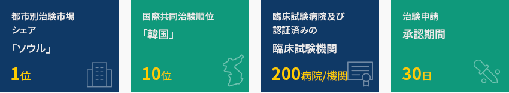
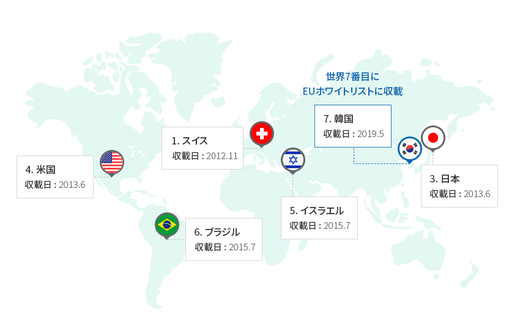
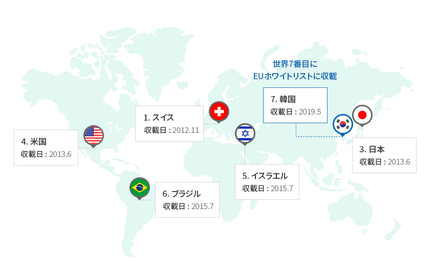
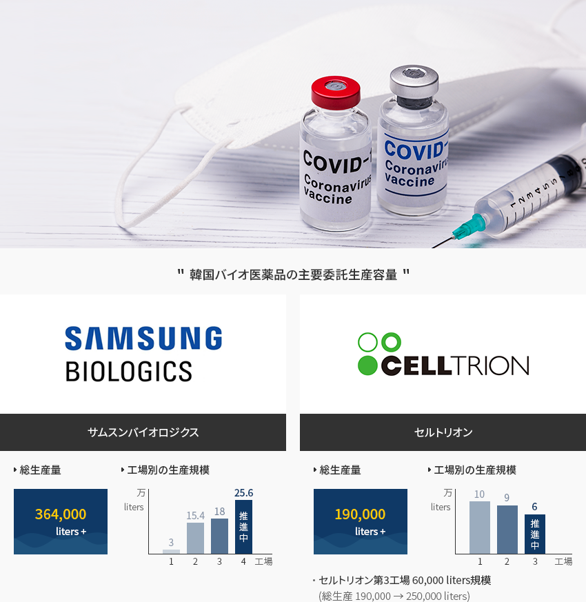
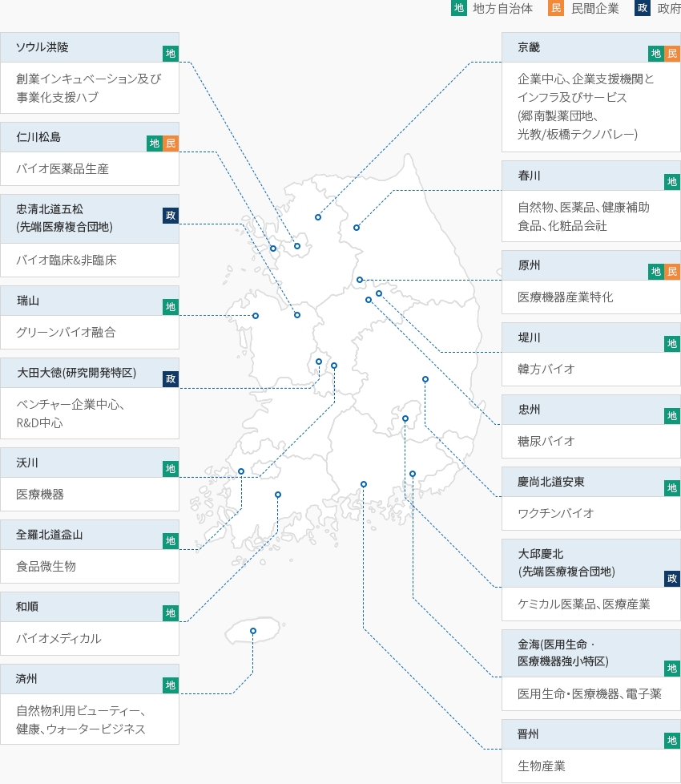

製薬・バイオ
- Home
- Why KOREA
- 産業
- 製薬・バイオ
医薬, バイオ
Pharmaceutical & Bio
-
グローバル治験と国際的規制環境 グローバル治験 世界第6位 コンテンツを閉じるグローバル治験と国際的規制環境 グローバル治験 世界第6位食品医薬品安全処(MFDS)が米国国立衛生研究所の臨床試験登録システム(ClinicalTrials.gov)のデータを分析した結果、
2020年基準で、韓国産業界が主導した臨床試験の世界市場シェアは2019年世界8位から6位へ、国際共同治験(臨床試験)順位も
2019年12位から2020年10位に上昇した。 特に、ソウルはグローバル治験(臨床試験)の都市別順位で2017年から1位を維持している。
迅速な承認申請期間(30日)と効率的な治験審査委員会(IRB)の構成、大規模で多様な患者プールで構成された検証済みの30以上の臨床試験病院と
170の臨床試験機関(Clinical trial centers、CTCs)など優秀なインフラを利用することで、韓国の医薬品治験
承認件数は2020年も前年比12%増加するなど、着実な成長をみせている。韓国は2014年に医薬品査察協定及び医薬品査察共同スキーム(PIC/S)、2016年には医薬品規制調和国際会議(ICH)に加入するなど
医薬品分野の規制先進国として認められている。2019年5月には世界で7番目にEUホワイトリストに収載され、
EUに輸出する際に求められていた原薬の製造管理・品質管理基準(GMP)確認書が免除されることになった。- 都市別治験市場シェア(ソウル) 1位
- 国際共同治験順位 (韓国) 10位
- 臨床試験病院及び認証済(みの臨床試験機関) 200病院/機関
- 治験申請(承認期間) 30日
 ※ 出所 : 食品医薬品安全処/韓国バイオ協会「EUホワイトリスト(GMP確認書免除国)」世界7番目にEUホワイトリストに収載
※ 出所 : 食品医薬品安全処/韓国バイオ協会「EUホワイトリスト(GMP確認書免除国)」世界7番目にEUホワイトリストに収載- 1. スイス 収載日: 2012.11
- 3. 日本 収載日: 2013.6
- 4. 米国 収載日: 2013.6
- 5. イスラエル 収載日: 2015.7
- 6. ブラジル 収載日:2015.7
- 7. 韓国 収載日: 2019.5
※ 出所 : 食品医薬品安全処 -
世界レベルの バイオ医薬品委託生産施設 コンテンツを閉じる世界レベルの バイオ医薬品委託生産施設韓国は世界のバイオ医薬品委託生産基地として高く評価されている。
サムスンバイオロジクスは従来の36万4千リットルの生産規模に加え、25万6千リットル規模の第4工場を新設しており、
セルトリオンも従来の19万リットルの生産規模に加え、追加で6万リットル規模の第3工場の建設を推進している。コロナ禍の状況で韓国企業とグローバルワクチン企業間の委託生産協力も行われている。
SKバイオサイエンスはアストラゼネカ及びノババックスの委託生産を推進しており、サムスンバイオロジクスは
モデルナワクチンを委託生産している。"韓国バイオ医薬品の主要委託生産容量"
- Samsung Biologics - サムスンバイオロジクス
- 総生産量 - 364,000 liters+
- 工場別の生産規模
- plant 1: 30,000 liters
- plant 2: 154,000 liters
- plant 3: 180,000 liters
- plant 4: 256,000 liters (推進中)
- CELLTRION - セルトリオン
- 総生産量 - 190,000 liters+
- 工場別の生産規模
- plant 1: 100,000 liters
- plant 2: 90,000 liters
- plant 3: 60,000 liters (推進中)
セルトリオン第3工場 60,000 liters規模 (総生産 190,000 → 250,000 liters)
- Samsung Biologics - サムスンバイオロジクス
-
完成医薬品を中心とした バイオ産業全般の成長 コンテンツを開く完成医薬品を中心とした バイオ産業全般の成長食品医薬品安全処によると、2020年韓国の医薬品生産実績は24兆5,655億ウォンで前年比10.1%増加しており、最近5年間、
年平均成長率6.9%となっている。医薬品生産総額の中で完成医薬品が85.6%、原薬が14.4%を占めている。
また、2020年の医薬品輸出額は約84億ドルで前年比62.5%の大幅な成長を記録し、
輸入は約73億ドルで前年比5.2%増加した。(単位 : 兆ウォン、%、億ドル、$)バイオ産業動向 区分, 年度 出所 : 韓国バイオ産業実態調査(2018基準) -
先端バイオ医薬品 研究開発の成果と政府の支援政策 コンテンツを開く先端バイオ医薬品 研究開発の成果と政府の支援政策バイオ医薬品市場はバイオシミラーの輸出に後押しされ年平均13%増加しており、韓国の成長動力産業となっている。韓国はバイオシミラー研究開発分野で世界的に頭角を現している。2021年9月基準で米国FDAが
許可した31のバイオシミラーの中で8種が韓国で開発された製品であり、迅速な研究開発力を確認することができる。韓国政府はバイオ産業を国の革新成長の3大中核産業に選定し、新型コロナへの対応及び治療のために
「Kグローバルワクチンハブ化」推進戦略で産業育成及び企業支援策を策定している。一定要件を満たした医薬・バイオ
分野への外国人投資に対しては租税特例制限法に基づき、所得税、取得税及び財産税を減免し、施行令で定め
た資本財の場合は関税、個別消費税及び付加価値税を免除している。2022年からは「先端投資地区指定」及び
「現金支援制度の改善」を通じて外国人投資企業に対する支援を拡大・施行する。一方、「先端再生医療及び先端バイオ医薬品の安全及び支援に関する法律」が制定され、2020年9月から施行されている。
先端バイオ医薬品は生きている細胞、組織又は遺伝子を原料にして製造したバイオ医薬品で、細胞治療薬、遺伝子治療薬、
組織工学製剤などがある。従来の合成医薬品とは異なる先端バイオ医薬品の特性に合わせて製造され、
品質管理基準も新たに設けるなど合理的な許可審査体系が構築されている。 -
グローバル製薬会社の 韓国での臨床研究及び共同研究開発の増加 コンテンツを開くグローバル製薬会社の 韓国での臨床研究及び共同研究開発の増加韓国グローバル医薬産業協会によると、韓国に進出したグローバル製薬会社35社が2019年に臨床研究に投資したR&D総額は
約4億ドル(韓国ウォンで4,837億ウォン)で、毎年持続的に増加している。2019年の一年間、これらの企業が韓国で行った
臨床研究も1,536件に上る。グローバル製薬会社は韓国の製薬会社と海外進出で協力することで韓国製薬会社とグローバル市場への参入経験を共有している。「多国籍製薬会社の韓国企業との海外共同進出推進例」多国籍製薬会社の韓国企業との海外共同進出推進例 外国人投資企業, 韓国企業/機関, 協力内容 外国人投資企業 韓国企業/機関 協力内容 Abbott 希望する企業 定期的なグローバル臨床及び許可/規制の最新トレンドなどの教育 Abbvie 東亜ST 免疫抗がん剤MerTK抑制剤の共同研究実施 Janssen 柳韓洋行 肺がん治療剤「レーザーチニブ」共同開発、商業化技術の輸出契約 MSD サムスンバイオエピス 多数のバイオシミラーのグローバル商業化で協力 東亜ST スーパーバクテリア抗生剤新薬「テジゾリド」共同海外進出 ハンミ薬品 複合高血圧治療剤「CozaarXQ」R&D投資及び約50ヵ国への輸出 ソウルバイオハブ MSDイノベーションパートナリングオフィスをオープン(‘20.3)し、韓国 企業のグローバル進出を支援中 Zuellig Pharma 保寧製薬 カナブ、デュカブなどに対する東南アジア13ヵ国の独占ライセンス契約 ※ 出所 : 韓国グローバル医薬産業協会 2020年年間報告書グローバル製薬会社は韓国の製薬会社、医療機関、研究機関などとともに多様な新薬開発研究を行っています。「多国籍製薬会社の韓国企業との共同研究開発推進例」多国籍製薬会社の韓国企業との共同研究開発推進例 外国人投資企業, 韓国企業/機関, 協力内容 外国人投資企業 韓国企業/機関 協力内容 AstraZeneca 東亜ST 3つの免疫抗がん剤先導物質に対する物質探索の共同研究 Bayer VITAL SMITH、スカイラブスなど Bayer(バイエル)本社のオープンイノベーションプログラムの韓国バージョン 「Grants4Apps Korea」実施 BMS サムスンバイオロジクス 商業用バイオ抗体新薬に対する生産契約の締結 - 韓国のパートナーを探すためのKorea Open Innovationローンチ GSK 韓国の主要 研究機関 次世代抗がん新薬開発の共同研究、免疫抗がん剤新薬候補物質に対する First Trial in Patient研究実施 Leo Pharma - 皮膚疾患研究支援プログラムのLEO Open Innovation labプログラム実施 Lilly 韓国化学研究院 開放型革新新薬開発パートナーシップの締結 MSD 凡部処新薬開発事業団 ジェネクシン、メドパクト、ファーマブシン、NKMAXなどの韓国のバイオベンチャーと 抗がん剤関連の共同研究開発プログラムを実施 Novartis ソウルバイオハブ 韓国との協力のための韓国ノバルティスの革新協力オフィス(Novartis Korea Innovation Partnering Office)運営 カトリック 中央医療院 保健医療データ及びデジタル技術利用新薬開発研究協力MOUの締結(‘20.4) Pfizer - 「INSPIRE」プログラムの実施(2012~現在) Sanofi-Aventis - 韓国の有望バイオスタートアップとの次世代抗がん剤開発プログラムの協業の推進 Sanofi-Pasteur SKバイオサイエンス 次世代肺炎球菌タンパク結合ワクチンのグローバル共同研究 ※ 出所 : 韓国グローバル医薬産業協会 年間報告書(2020) -
地域別バイオクラスター 造成 コンテンツを開く地域別バイオクラスター 造成韓国は全国各地にバイオ関連クラスターが造成されており、医薬品分野特化クラスターも、五松、大邱、仁川、
和順などに多数所在している。バイオクラスターとは、大学、企業、病院、研究所などが地域を基盤として緊密なネットワークを
構築する集合体を意味する。韓国に進出する海外の製薬企業がこのような地域に進出すれば、
税制など多様なインセンティブを提供され、関連大学、企業、病院、研究所などとのネットワーキング支援を受けることになる。「韓国バイオクラスターの現状」[地] 地方自治体 / [民] 民間企業 / [政] 政府- ソウル洪陵(地): 創業インキュベーション及び事業化支援ハブ
- 京畿(地, 民): 企業中心、企業支援機関とインフラ及びサービス(郷南製薬団地、光教/板橋テクノバレー)
- 仁川松島(地, 民): バイオ医薬品生産
- 春川(地): 自然物、医薬品、健康補助食品、化粧品会社
- 忠清北道五松(先端医療複合団地) (政): バイオ臨床&非臨床
- 原州(地, 民): 医療機器産業特化
- 瑞山(地): グリーンバイオ融合
- 堤川(地): 韓方バイオ
- 大田大徳(研究開発特区)(政): ベンチャー企業中心、R&D中心
- 忠州(地): 糖尿バイオ
- 沃川(地): 医療機器
- 慶尚北道安東(地): ワクチンバイオ
- 大邱慶北(先端医療複合団地)(政): ケミカル医薬品、医療産業
- 全羅北道益山(地): 食品微生物
- 金海(医用生命ㆍ医療機器強小特区)(地): 医用生命・医療機器、電子薬
- 和順(地): バイオメディカル
- 晋州(地): 生物産業
- 済州(地): 自然物利用ビューティー、健康、ウォータービジネス
※ 出所 : 保健福祉部、各地方自治体
※ 資料 : 韓国バイオ協会


Invest KOREA
医薬/ヘルスケアPM
チョン・ダヒ
新産業誘致チーム
T.+82-2-3460-7865
おすすめの立地情報
Industrial complex information
[Incheon Metropolitan City Michuhol-gu] Incheon General Industrial
Complex
Click [Go to Detailed Information] to go to the relevant information screen of
Smart K-Factory service of Industrial Complex Corporation.
-
Complex nameIncheon General Industrial Complex
-
Initial designation date1973.04.01
-
Designated area(m2)1,136,269
-
ManagementIncheon Metropolitan City Corporation
-
Nearby RailwayBupyeong Station
-
Distance from station(km)7
-
Nearby AirportGimpo International Airport
-
Distance from airport(km)29
-
Industrial water Supply capacity(ton/day)-
-
Affiliation local governmentIncheon Metropolitan City Michuhol-gu
-
Population2,943,491
Industrial complex information
[Chungcheongbuk-do Cheongju City] Osong Life Science Complex
Click [Go to Detailed Information] to go to the relevant information screen of
Smart K-Factory service of Industrial Complex Corporation.
-
Complex nameOsong Life Science Complex
-
Initial designation date1997.09.23
-
Designated area(m2)4,833,314
-
ManagementKorea Industrial Complex Corporation
-
Nearby RailwayCheongju Station
-
Distance from station(km)9
-
Nearby AirportCheongju International Airport
-
Distance from airport(km)21
-
Industrial water Supply capacity(ton/day)25000(㎥/day)
-
Affiliation local governmentChungcheongbuk-do Cheongju City
-
Population843,782
Industrial complex information
[Gyeongsangbuk-do Andong City] Gyeongbuk Bio 2nd General Industrial
Complex
Click [Go to Detailed Information] to go to the relevant information screen of
Smart K-Factory service of Industrial Complex Corporation.
-
Complex nameGyeongbuk Bio 2nd General Industrial Complex
-
Initial designation date2016.02.29
-
Designated area(m2)299,829
-
ManagementGyeongsangbuk-do Andong City
-
Nearby RailwayAndong Station
-
Distance from station(km)19
-
Nearby AirportDaegu International Airport
-
Distance from airport(km)111
-
Industrial water Supply capacity(ton/day)1863(㎥/day)
-
Affiliation local governmentGyeongsangbuk-do Andong City
-
Population158,867
Industrial complex information
[Gyeongsangbuk-do Andong City] Gyeongbuk Bio General Industrial
Complex
Click [Go to Detailed Information] to go to the relevant information screen of
Smart K-Factory service of Industrial Complex Corporation.
-
Complex nameGyeongbuk Bio General Industrial Complex
-
Initial designation date2004.07.05
-
Designated area(m2)941,431
-
ManagementGyeongsangbuk-do Andong City
-
Nearby RailwayYecheon Station
-
Distance from station(km)15
-
Nearby AirportDaegu International Airport
-
Distance from airport(km)111
-
Industrial water Supply capacity(ton/day)5287(㎥/day)
-
Affiliation local governmentGyeongsangbuk-do Andong City
-
Population158,867
Industrial complex information
[Gyeonggi-do Hwaseong-sity] Gyeonggi Hwaseong Bio Valley General Industrial
Complex
Click [Go to Detailed Information] to go to the relevant information screen of
Smart K-Factory service of Industrial Complex Corporation.
-
Complex nameGyeonggi Hwaseong Bio Valley General Industrial Complex
-
Initial designation date2012.07.04
-
Designated area(m2)0
-
ManagementHwaseong City Corporation
-
Nearby RailwaySuwon Station
-
Distance from station(km)27
-
Nearby AirportGimpo International Airport
-
Distance from airport(km)52.5
-
Industrial water Supply capacity(ton/day)3154(㎥/day)
-
Affiliation local governmentGyeonggi-do Hwaseong-sity
-
Population842,864
Industrial complex information
[Jeollabuk-do Iksan City] Iksan 4th Industrial Complex [formerly: Iksan
General Medical Science]
Click [Go to Detailed Information] to go to the relevant information screen of
Smart K-Factory service of Industrial Complex Corporation.
-
Complex nameIksan 4th Industrial Complex [formerly: Iksan General Medical Science]
-
Initial designation date2008.03.14
-
Designated area(m2)502,825
-
ManagementJeollabuk-do Iksan City
-
Nearby RailwayHwangdeung Station
-
Distance from station(km)4
-
Nearby AirportGunsan Airport
-
Distance from airport(km)47
-
Industrial water Supply capacity(ton/day)4,540(㎥/day)
-
Affiliation local governmentJeollabuk-do Iksan City
-
Population283,496